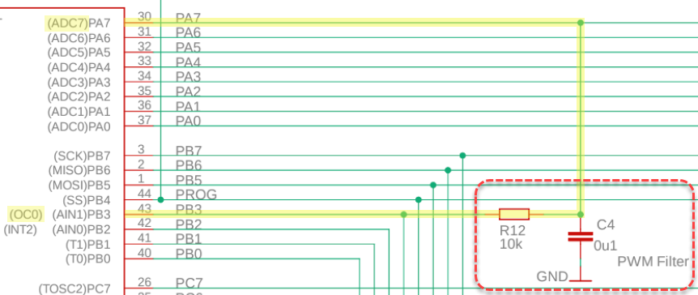
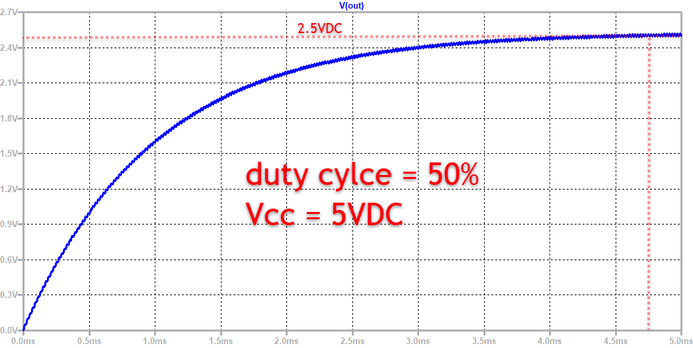

6. DAC - Digital Analog Converter
6.1 Aufgabe / Herausforderung
Manche Anwendungen erfordern, dass aus einem digitalen Signal eine analoge Spannung erzeugt wird, wie etwa die Ausgabe eines Musiksignals auf einem Kopfhörer. Für diese Aufgabe gibt es dedizierte IC's. Die AVR-Mikrocontorller Serie hat keinen integrierten DAC. Hier kann ein einfaches RC-Glied (Tiefpass) verwendet werden, welches mit einem PWM Signal gespeist wird.
6.2 Beispiel RC-Glied MEGACARD v6
Auf der MEGACARD v6 befindet sich ein Tiefpass, welcher am Pin OC0/PB3 angeschlossen (Timer0):

Über eine Rückführung zu ADC7/PA7 kann das über ein PWM erzeugte Analog-Signal wieder eingelesen werden.
6.3 Überlegungen zur Dimensionierung
Der Duty Cycle (D) kann zwischen 0% und 100% variiert werden. Ein D von 0% erzeugt eine Ausgangsspannung von 0VDC. Ein D von 100% erzeugt eine Ausgangsspannung von Vcc. Ein D dazwischen erzeugt ein Analogsignal von x% von Vcc.
Beispiel Duty Cycle 50% / fPWM = 50kHz

Niedrige PWM-Frequenzen erhöhen den Ripple am Ausgang des Filters deutlich. Für Wechselsignale ist zudem die Dämpfung des RC-Glied (Tiefpass) zu beachten, da höhere Frequenzen entsprechend abgeschwächt werden. Zu beachten ist weiters, dass es eine gewisse Zeit benötigt bis die korrekte Spannung am Kondensator anliegt. Zur Erzeugung des PWM-Signals bietet sich der Fast-PWM Mode an. Die LTspice Datei kann hier heruntergeladen werden.
Weiterführende Informationen finden Sie z.B. in diesem Microchip Technical Brief.